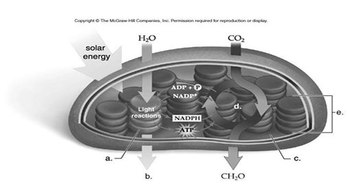

Biology General Questions Please answer all questions below. You have 100 minutes to complete the exam. Based on the five steps listed below, choose the correct sequence for biological research: 1) Performing an experiment 2) Conducting preliminary observation about a particular problem in biology 3) Statement of biological theory 4) Collecting of experimental data 5) Hypothesis formulation A) 1, 2, 3, 4, 5 B) 5, 4, 3, 2, 1 C) 2, 5, 1, 4, 3 D) 2, 5, 1, 3, 4 From which of the following do scientists usually formulate a hypothesis? A) Experiment B) Theory C) Prediction D) Observation In an experiment testing fertilizer effects on plant growth, what is the dependent variable? A) Growth rate of the plant B) Fertilizer concentration C) Plants in control group D) Plants in experimental group Suppose 25% of an enzyme is inhibited by a non-competitive inhibitor. What happens if substrate concentration is increased by 50%? A) The rate of the reaction remains unchanged B) More enzyme molecules get inhibited C) The rate of the reaction decreases by 50% D) The reaction rate doubles What are the environmental advantages of using enzymes in industry? A) High production with less heat input B) High production with high heat input C) High production with more CO2 emission D) High production with more heat and CO2 emission Where does the Calvin cycle take place? A) Stroma of the chloroplast B) Chlorophyll molecule C) Thylakoid membrane D) Outer membrane of the chloroplast Which of the following is an example of biotechnology? A) Genetic engineering for insulin production B) Studying fossils of extinct species C) Space exploration with telescopes D) Manufacturing of automobiles with robotics What is the primary goal of conservation of natural resources? A) Exploit resources for economic gain B) Preserve resources for future generations C) Eliminate the use of resources entirely D) Maximize extraction for industrial development Which of the following is an example of non-renewable natural resources? A) Solar energy B) Wind energy C) Fossil fuels D) Timber Which of the following factors can contribute to food insecurity? A) Climate change and extreme weather events B) High agricultural productivity and technology advancements C) Increased access to nutritious foods in local communities D) Stable political and economic conditions Which of the following is an example of a biopesticide? A) Synthetic pyrethroids for mosquito control B) Chlorinated hydrocarbons for termite control C) Bacillus thuringiensis (Bt) for caterpillar control D) Organophosphates for weed control What is the importance of gene therapy in the field of medicine? A) Potential cure for untreatable genetic diseases B) Improves effectiveness of drug therapies C) Eliminates need for surgical interventions D) Enhances immune response to diseases Among the following human diseases, identify the one that is transmitted through a vector? A) Leprosy B) Mumps C) Gonorrhea D) Trypanosomiasis What is the criterion in the modern classification of enzymes? A) The type of reaction the enzyme catalyzes B) The place of their synthesis C) The type of the product the enzyme yields D) The type of substrate that the enzyme acts on If an enzyme depends on a cofactor for its activity, then the enzyme becomes active and functional when it is found in the form of: A) Apoenzyme B) Coenzyme C) Holoenzyme D) Cofactor How do enzymes accelerate biochemical reactions? A) By increasing the amount of activation energy of the reaction B) Being specific to various substrates C) By reducing the amount of activation energy of the reaction D) Since they are proteinase molecules Suppose three potato cylinders are kept for some time in different sucrose solutions and distilled water, which will be more flaccid? A) The cylinder in 10% solution B) The cylinder in 15% solution C) The cylinder in 80% solution D) The cylinder in distilled water Which of the following cell types can be rich in lysosomes? A) Nerve cell B) Muscle cell C) Phagocytic cells D) Red blood cells What happens when red blood cells are kept in a hypertonic solution? A) The same net gain and loss of water B) More water goes out of the cell than getting in C) More water gets into the cell than leaving it D) The cells prevent water from getting in or leaving out Which of the following is an important function of the Golgi apparatus? A) Protein synthesis B) Removing of debris from the cell C) Packaging of protein for export out of the cell D) Storage of waste materials not needed by the cell Which of the following stages of aerobic respiration does not take place in the mitochondria? A) Link reaction B) Glycolysis C) Krebs cycle D) Electron transport chain Based on the report writing format listed above, choose the alternative that shows the correct sequence in reporting the results of research in scientific journals? A) 1, 5, 3, 6, 8, 7, 2, 4 B) 7, 8, 6, 3, 5, 4, 1, 2 C) 7, 3, 4, 2, 5, 8, 6, 1 D) 1, 6, 8, 5, 2, 4, 3, 7 The petiole of a leaf is: A) The outer protective covering of the leaf B) The part of the leaf that attaches it to the stem C) The tip of the leaf D) The central vein of the leaf Which of the following is the function of a bacterial endospore? A) Reproduction B) Survival C) Storage D) Protein synthesis What organisms are capable of photosynthesis? A) Plants only B) Plants and algae only C) Plants and some bacteria only D) Plants, algae and some bacteria Which of the following is an example of a C4 plant? A) Cactus B) Maize C) Rice D) Wheat G3P (glyceraldehyde 3 phosphate) is used by plants for all of the following EXCEPT the formation of: A) Fatty acid B) Oxygen C) Sucrose D) Starch Which leaf tissue layer is responsible for the majority of photosynthesis in plants? A) Palisade mesophyll B) Sponge mesophyll C) Guard cell D) Epidermis At which stage of aerobic respiration is most ATP generated? A) Krebs cycle B) Glycolysis C) Electron transport chain D) Link reaction How many molecules of glycerol and fatty acids are needed respectively to form 200 molecules of triglyceride? A) 200 and 400 B) 200 and 600 C) 100 and 200 D) 400 and 600 Which chemical element is the most abundant in living cells? A) Carbon, Hydrogen, Oxygen, Nitrogen B) Oxygen, Nitrogen, Phosphorous, Sulphur C) Nitrogen, Hydrogen, Phosphorous, Calcium D) Hydrogen, Nitrogen, Phosphorous, Sulphur The presence of cholesterol in the cell membrane contributes to: A) Increased fluidity of the membrane B) Decreased fluidity of the membrane C) Enhanced transport of large molecules D) Formation of lipid rafts The cell membrane plays a crucial role in maintaining: A) Intracellular pH balance B) Genetic material replication C) Protein synthesis D) Mitochondrial function Which model is widely accepted and supported by scientific evidence as the current understanding of the cell membrane structure? A) Davson-Danielli model B) Fluid mosaic model C) Lipid bilayer model D) Protein monolayer model How can the community contribute to HIV control efforts? A) Promoting HIV awareness and education B) Encouraging regular HIV testing C) Supporting access to healthcare and treatment D) All of the above What is the reason that Louis Pasteur used a swan-necked flask instead of a straight-necked one in his experiment designed to disprove the theory of spontaneous generation? A) To allow free passage of air to the broth inside the flask B) To prevent the escape of any microorganisms from the flask C) To keep the broth in the flask hot to kill microorganisms D) To trap particles from the air that might enter the flask before reaching the broth In which of the following are all the tools mainly used in the laboratory rather than in field situations? A) Data logger, flow meter, theodolite, GPS receivers B) Flow meters, centrifuges, theodolites, microscopes C) Centrifuges, plant presses, flow meters, microscopes D) Centrifuges, petri dishes, electron microscope, measuring cylinders The biological instrument used to culture bacteria in the laboratory is: A) Test tube B) Petri dish C) Beaker D) Microscope Which of the following is an inorganic compound? A) Deoxyribose B) Calcium carbonate C) ATP D) Glycine Which of the following properties of water makes sweat an effective body cooler? A) Its high specific heat B) Its low density when frozen C) Its high surface tension D) Its high heat of vaporization Why is photosynthesis impossible at a depth of 2000m? A) It is too cold B) Only blue light penetrates this far C) It is too hot D) No light penetrates this far In which one of their structural parts do different molecules of amino acids differ from one another? A) In their amino group B) In their alpha-carbon group C) In their R group D) In their carboxyl group If one mixes a sample of fruit juice and some drops of Benedict's solution and obtains a brick-red precipitate upon warming the mixture, what does the juice contain? A) Starch B) Reducing sugar C) Sucrose D) Protein How many water molecules are released when 400 glucoses in a condensation reaction form starch? A) 100 B) 600 C) 399 D) 397 Which of the following polysaccharides is stored in the liver and muscles of animals? A) Starch B) Glycogen C) Cellulose D) Chitin Which of the following is NOT a function of triglycerides in the body? A) Energy storage B) Thermal insulation C) Enzyme production D) Buoyancy Which one of the following is true? A) Cellular respiration occurs in mitochondria and in chloroplasts B) Photosynthesis occurs in chloroplasts and cellular respiration occurs in mitochondria C) Photosynthesis occurs in mitochondria and in chloroplasts D) Photosynthesis occurs in mitochondria and cellular respiration occurs in chloroplasts Which of the following processes of photosynthesis does not require the presence of light to take place? A) Photolysis of water B) ATP formation C) Reduction of NADP D) Carbon fixation Which of the following is false about non-cyclic photophosphorylation? A) It requires photolysis of water B) It produces NADPH C) It generates ATP D) PSI (chlorophyll) is the final electron acceptor The reaction that occurs in the bundle sheath cell of C4 plants from the following is: A) Calvin cycle B) Conversion of PEP to oxaloacetate C) Carbon fixation D) Conversion of oxaloacetate to malate Icosahedral symmetry of viruses is known for their: A) Helical capsids B) Complex replication mechanisms C) Spherical shape with 20 triangular faces and 12 vertices D) Ability to infect only bacteria When glucose is used to make ATP all of the carbons in glucose are converted to CO₂. Which metabolic pathway produces most of this CO₂? A) Electron transport chain B) Krebs cycle C) Glycolysis D) Link reaction What will happen to the rate of enzyme catalyzed reaction, if the substrate concentration increases without altering enzyme concentration? A) Increase initially and become constant B) Increase quickly all the time C) Decrease quickly all the time D) Increase initially and become zero finally Which of the following statements best describes genetic engineering? A) The study of genetic inheritance patterns in human populations B) The manipulation of an organism's genetic material to introduce desirable traits C) The analysis of genetic variation within a species D) The study of DNA replication and protein synthesis How can biotechnology contribute to securing the food supply of society? A) By eliminating the need for agricultural practices B) By reducing the global population to match the available food resources C) By enhancing crop productivity and improving resistance to pests and diseases D) By promoting traditional farming methods over modern techniques Which of the following is an example of a traditional use of biotechnology? A) Developing genetically modified organisms (GMOs) B) Using fermentation to produce bread and alcoholic beverages C) Engineering plants for herbicide resistance D) Modifying the genetic material of organisms using modern laboratory techniques Which microorganism plays a key role in the fermentation process of tella, tej, wine and beer production? A) Lactic acid bacteria B) Acetic acid bacteria C) Saccharomyces D) Penicillium mold What is bioremediation? A) The process of using chemical compounds to clean up pollutants B) The application of microorganisms to degrade or remove pollutants from the environment C) The process of using physical barriers to isolate contaminated areas D) The extraction of pollutants from the environment using specialized machinery What is the primary mode of transmission for respiratory infections caused by microorganisms? A) Direct contact with contaminated surfaces B) Ingestion of contaminated food and water C) Inhalation of respiratory droplets from infected individuals D) Transmission through insect vectors Which of the following statements is true regarding fungi? A) Fungi are photosynthetic organisms B) Fungi are multicellular and have true roots, stems, and leaves C) Fungi reproduce through spores D) Fungi are not chemoheterotrophic Which of the following diseases is not caused by a protozoan parasite? A) Malaria B) Measles C) Leishmaniasis D) Toxoplasmosis Which of the following is a characteristic feature of protozoa? A) Multicellularity B) Presence of a Cell wall C) Presence of chloroplasts for photosynthesis in all protozoa D) Presence of a nucleus Which of the following viruses is primarily transmitted through animal bites? A) Rabies virus B) Mumps virus C) Human papilloma virus D) Hepatitis C virus Among the following, one is not the correct idea of Robert Koch's postulate: A) The microorganisms must always be present when the disease is present B) The microorganism can be isolated from an infected individual & then grow in culture C) Introducing such cultured microorganisms into a healthy host should result in disease developing D) It is not possible to re-isolate the microorganism to obtain a pure culture Question number 65-67 is to be answer based on the following diagram  What organelle is illustrated above? (Refer to diagram in original exam) A) Mitochondrion B) Chloroplast C) Golgi apparatus D) Endoplasmic reticulum What is the term for the structure labeled "a"? (Refer to diagram in original exam) A) Thylakoid B) Stroma C) Matrix D) Crista Which statement is NOT true of the set of reactions labeled "d"? (Refer to diagram in original exam) A) They are referred to as the Calvin Cycle B) Carbon dioxide is "fixed" during the process C) Most carbon is converted into RuBP D) The process takes place in the grana An enzyme that hydrolyzes protein will not act upon starch. This fact indicates that enzymes are: A) Catalytic B) Synthetic C) Hydrolytic D) Specific Which factor has a more negative effect on the functions of enzymes than the others? A) Neutral pH B) Very high temperature C) Optimal amount of salt concentration D) Optimal amount of substrate concentration When an enzyme is denatured by heat or extreme pH, which one of the following does it lose? A) The peptide bonds B) Primary structure C) Secondary structure D) Tertiary structure If the ratio of competitive inhibitor molecules to substrate molecules is 2:8, the enzyme controlling the reaction will be: A) 10% activated B) 20% activated C) 80% activated D) two-eight inhibited Which of the following mechanisms do cells use to regulate enzyme catalyzed reactions in metabolic pathways? A) Enzyme denaturation B) End-product inhibition C) Irreversible inhibition D) Competitive inhibition Among the following scientists who contributed to the cell theory, identify the one who stated that a cell can arise only from another cell like it. A) Robert Hooke B) Theodor Schwann C) Matthias Schleiden D) Rudolf Virchow Which of the following is true about prokaryotic and eukaryotic cells? A) Both prokaryotes and eukaryotes have membrane-bonded nucleus B) Eukaryotes have linear DNA, but prokaryotes have a continuous loop DNA C) Prokaryotes have mitochondria, but eukaryotes have no mitochondria D) Prokaryotic cells are larger and contain more organelles than eukaryotes which Of the following four cells whose surface area to volume ratio is given, which cell can more efficiently transport its needs of materials across the cell surface? A) 24:8 ratio B) 54:27 ratio C) 96:64 ratio D) 150:125 ratio Why are cells that secrete hormones and enzymes rich in rough endoplasmic reticulum? Because they produce more: A) Proteins B) ATP C) Carbohydrates D) Lipids Which of the following is not found in the energy currency of the cell (ATP)? A) Nitrogenous base B) Hexose sugar C) Phosphate D) Pentose sugar Which of the following is an example of a beneficial application of microorganisms? A) Infectious diseases B) Antibiotic production C) Food spoilage D) Air pollution How are vector-borne diseases primarily transmitted to humans? A) Through contaminated water B) Through direct contact with an infected person C) Through the respiratory system D) Through the bite of an infected arthropod Which molecule is the final electron acceptor in the electron transport chain? A) Oxygen B) Carbon dioxide C) NADH D) FADH₂ Which of the following is a prokaryotic microorganism? A) Trichomonads B) Protozoan C) Slime mold D) Cyanobacteria Which of the following terms refers to a prokaryotic cell that is comma-shaped? A) Sarcina B) Bacilli C) Cocci D) Vibrio Compared with Gram-positive bacteria, Gram-negative bacteria: A) Are less resistant to antibiotics B) Have no outer membrane C) Lose the crystal violet stain in Gram's method of staining D) Have thicker peptidoglycan layer in their cell wall Among the following infectious human diseases, identify the one that is not caused by bacteria: A) Pertussis B) Typhoid fever C) Syphilis D) Aspergillosis All of the following are characteristic of viruses except: A) Viruses have an inner core of nucleic acid B) Viruses do not have a cellular organization C) Viruses are affected by antibacterial antibiotics D) Viruses are obligate intercellular parasites Given these characteristics of a transport process: Moves with the concentration gradient Does not require energy Requires carrier molecules The transport process involved is: A) Facilitated diffusion B) Active transport C) Phagocytosis D) Pinocytosis What is the primary function of the Calvin cycle? A) Use ATP to release carbon dioxide B) Use NADPH to release carbon dioxide C) Split water and release oxygen D) Synthesize simple sugars from carbon dioxide How is photosynthesis similar in C4 and CAM plants? A) Both types of plants make sugar without the Calvin cycle B) In both cases, thylakoids are not involved in photosynthesis C) Both types of plants make most of their sugar in the dark D) In both cases, PEP carboxylase is used to fix carbon initially Which of the following is a key difference between DNA and RNA? A) DNA contains deoxyribose sugar, while RNA contains ribose sugar B) DNA is single-stranded, while RNA is double-stranded C) DNA contains uracil as one of its bases, while RNA contains thymine D) DNA is found in the nucleus, while RNA is found in the cytoplasm End-product inhibition or negative feedback control of a metabolic pathway occurs when: A) The last product of the pathway inhibits the enzyme controlling the first reaction B) The last product of the pathway inhibits the enzyme controlling the last reaction C) The first product of the pathway inhibits the enzyme controlling the last reaction D) The last product of the pathway inhibits the enzyme controlling the second reaction Given these characteristics of a transport process into a cell: ATP is required Does not exhibit saturation Solid particles are transported The transport process involved is: A) Active transport B) Facilitated diffusion C) Phagocytosis D) Pinocytosis What is the role of microorganisms in sewage treatment plants? A) To produce ethanol B) To filter out heavy metals C) To break down organic matter D) To produce antibiotics What is the primary role of vaccines in disease prevention? A) Treating symptoms of the disease B) Boosting the immune system C) Destroying bacteria and viruses D) Stimulating allergic reactions What is the primary purpose of fermentation? A) To generate ATP B) To regenerate NAD+ C) To produce oxygen D) To convert pyruvate to acetyl-CoA In the cell membrane, phospholipids are arranged in a bilayer with their heads facing the external and internal environments and their tails facing each other: A) Hydrophilic; hydrophobic B) Charged; uncharged C) Hydrophobic; hydrophilic D) Uncharged; charged Suppose you labeled two permeable membranes to water as A and B, and you add hypertonic solution in A and hypotonic solution in B. What will be the expected result? A) No change in both membranes B) Rise of the water level in B C) Rise of the water level in A D) Rise of the water level in both membranes Which biomolecule is the primary source of energy for living organisms? A) Lipids B) Proteins C) Nucleic acids D) Carbohydrates Which level of protein structure refers to the linear sequence of amino acids? A) Secondary structure B) Primary structure C) Quaternary structure D) Tertiary structure Which mode of nutrition describes bacteria that obtain energy from sunlight and carbon from inorganic sources? A) Photoautotroph B) Photoheterotroph C) Chemoautotroph D) Chemoheterotroph Which cycle is associated with the formation of viral particles called prophage? A) Lytic cycle B) Lysogenic cycle C) Replicative cycle D) Retroviral cycle Submit Answers Correct Answers